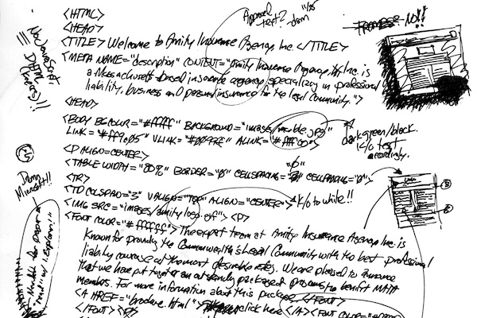
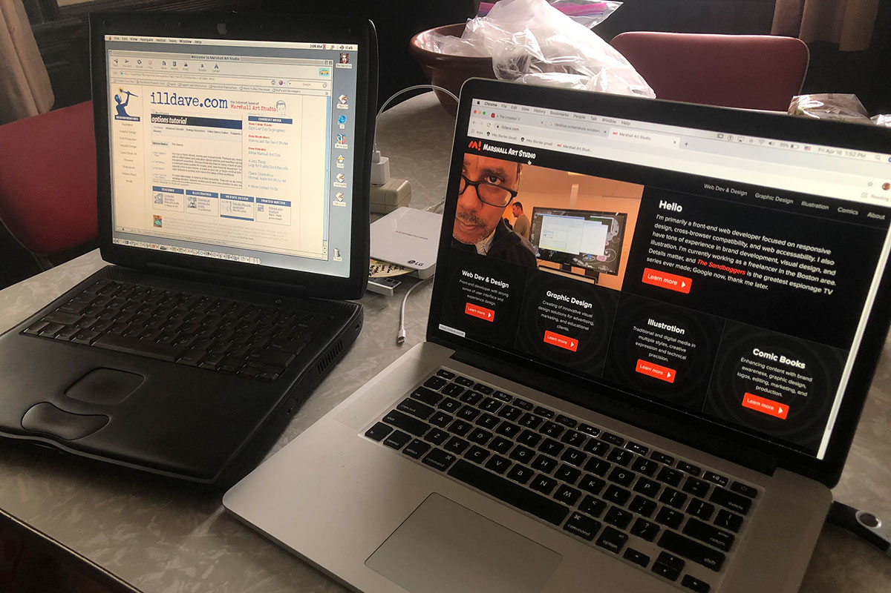
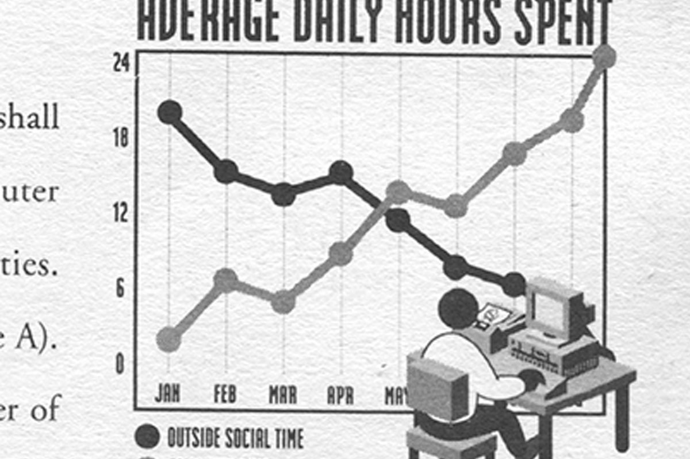
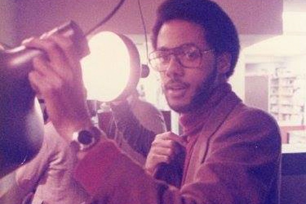
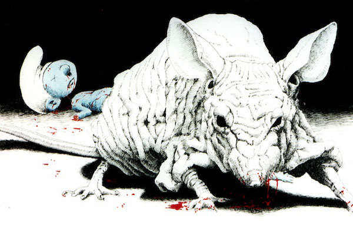

Using AI as UX and content partner
How I used Claude as a content editor and IA sounding board to rebuild a 2010 comics workshop site.
Using AI as UX and content partner
How I used Claude as a content editor and IA sounding board to rebuild a 2010 comics workshop site.
My so-called blog
Thoughts on web development, design, and the creative process
Using AI as UX and content partner
How I used Claude as a content editor and IA sounding board to rebuild a 2010 comics workshop site.
Slightly older

HTML retro build I was crazy enough to build actual HTML from this 20-year-old hand-drawn sketch.
Web development history of this site Follow the author's journey of writing, designing, and coding this website.
Autobiography of Malcolm XHTML How I wound up spending the most of four decades looking at screens.
RIP clients & employers Outlasting echos from the past takes pressure off in the present.
Smurf illustration Somehow I turned a bad mood into a one-of-a-kind illustration that's living in Paris. Amway tales
Coming to terms with losing a close and very dear friend to Amway.
Amway tales
Coming to terms with losing a close and very dear friend to Amway.
Categories
- The Latest
- Using AI as a UX and content partner
- Dead Smurf illustration
- Illustration Friday
- HTML retro build
- Web development history of this site
- Web Development
- Using AI as a UX and content partner
- HTML retro build
- Web development history of this site
- Autobiography of Malcolm XHTML
- RIP clients & employers
- Non-Work
- Watchmen movie trailer review
- Amway tales